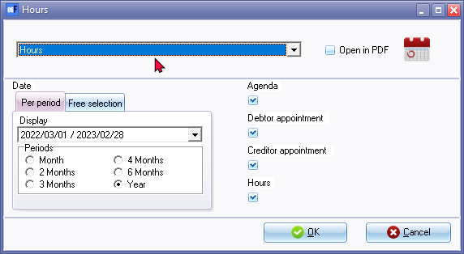
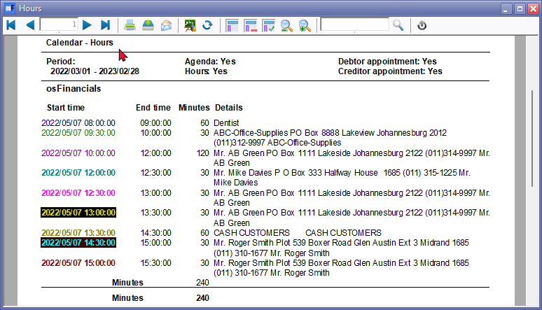
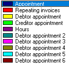

Calendar (Reports menu)
The "Calendar - Hours" report allows you to print the categories of events (i.e. Appointments (General), Debtor appointments, Creditor appointments and Hours) scheduled in the Calendar.
|
Multi-User calendar (agenda) - Manual - Shop - Licence : Once-off - This plugin adds the multi-user agenda (multiple agendas) to the Calendar (Planner). You can add agendas and link them as default to the current user. For every agenda a tab will appear in the agenda Calendar so you can see what the appointments, etc. are on other agendas. You can have a agenda for each employee, salesperson, user, etc. and create invoices directly from his / her agenda with a simple click. Each agenda has it's own calendar and task list. |
Calendar - Hours report options
To print Calendar - Hours reports:
- On the Reports ribbon, select Reports → Calendar.

- Select the period on the Per period tab. You may click on the Free selection tab to select a specific date or a range of dates.
- By choosing the desired categories, you can generate a printed report that encompasses the selected events from the calendar. This provides a comprehensive overview of the scheduled activities, appointments, and invoicing details associated with debtors, creditors, and general events. Select the following options:
- Agenda - Selecting this option will include general events such as meetings, appointments, and other scheduled activities.
- Debtor appointment - By selecting this option, you can include the appointments (all six debtor appointment categories) specifically related to debtor (customer/client) accounts. These appointments are also listed in the Appointment tab of the respective debtor accounts.
- Creditor appointment - By selecting this option, allows you to include the appointments associated with creditor (supplier/vendor) accounts. Similarly, these appointments can be found in the Appointment tab of the corresponding creditor accounts.
- Hours - This option will list appointments for the "Hours" event category. The are scheduled appointments for which quotes are generated and confirmed to invoices. When selecting this option, appointments scheduled for the "Hours" event category will be included in the report. These appointments typically represent scheduled hours for which quotes have been generated.
- Click on the OK button.
Printed : Calendar - Hours report
An example of the "Calendar - Hours" (all events) report, is as follows:

The colours for the events in the following categories:
- Agenda / Appointment (General): This category lists scheduled general appointments, such as meetings with a bank manager or lunches with clients or colleagues.
- Repeating invoices: The repeating or recurring invoices will not be included in this report.
- Hours: This category lists scheduled services rendered on an hourly basis. Once the hours are scheduled, you have the option to generate Quotes based on the scheduled hours. These Quotes can be edited if necessary to ensure accuracy. After finalizing the Quotes, you can convert them into Invoices.
- Debtors appointment: This category lists up to six different categories of appointments with debtors (customers/clients).
- Creditors appointment: This category lists scheduled appointments with creditors (suppliers/vendors).
|
Bulk time entries - Bulk time entries added for selected debtors (customers / clients) will be printed on this report as hours. |
|
|
When you use the Bulk time entry feature to add time entries for a selected debtor account, those entries are initially recorded but not directly listed on the "Debtor accounts - Appointment" tab. However, once you proceed to generate quotes for the hours using the "Create invoices for hours" button on the Calendar, the bulk time entries will be transformed into quotes. Therefore, to see the bulk time entries reflected on the "Debtor accounts - Appointment" tab, it is necessary to generate quotes for those hours using the "Create invoices for hours" button in osFinancials5. At this point, the quotes created from the bulk time entries will be listed on the "Debtor accounts - Appointment" tab. |

|
See video on Bulk time entries |
|
|
Repeating invoices events are not included in this report. |